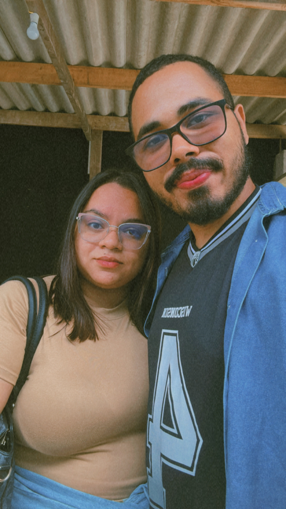

Me Desculpe, Meu Amor.

Eu sei que te magoei, e quero, do fundo do meu coração, que me perdoe.
O que mais desejo é te ver feliz e fazer de tudo para reconquistar sua confiança.
Você é tudo o que mais amo nesta vida e estou disposto a corrigir meus erros e te fazer sorrir, a cada novo amanhecer.
Te amo infinitamente. <3
Vamos Conversar
Quero o Divórcio